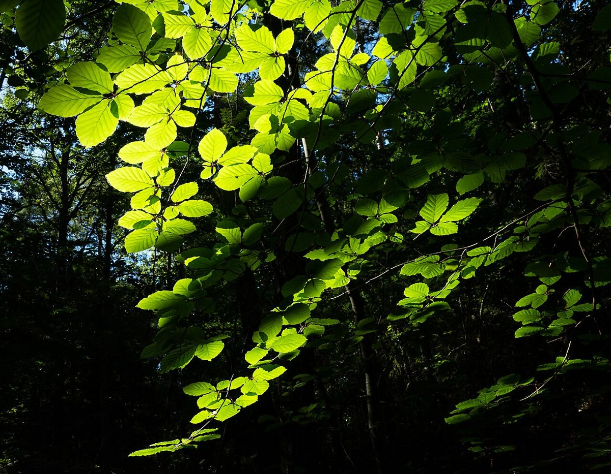
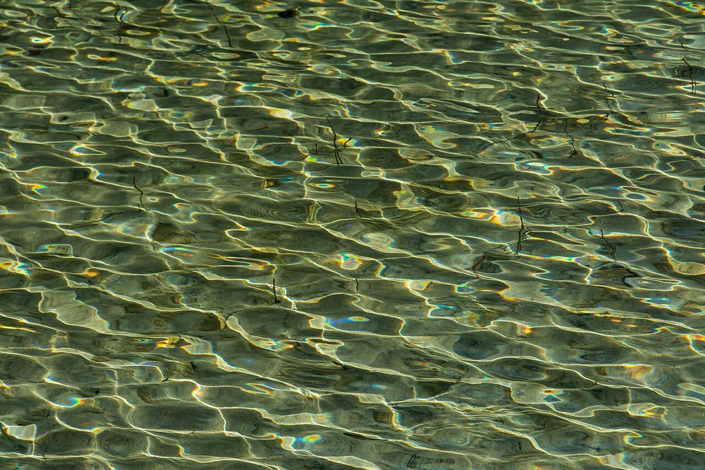

口コミ
このページの声は、サイトのイメージを伝えるために制作側で作成した例です。実際のお客様の声ではありません。
イメージ例
ゆっくりした気持ちで過ごせました。帰るころには、気分もすっきりしていました。
イメージ例
髪のことを相談しやすく、こちらの話をていねいに聞いてもらえた、という印象です。
イメージ例
仕上がりに満足しました。また相談したいと思います。
※投稿者名は設けていません。すべてイメージ例です。


ご相談・お問い合わせ
実際のご利用や予約方法については、お電話またはInstagramからお問い合わせください。